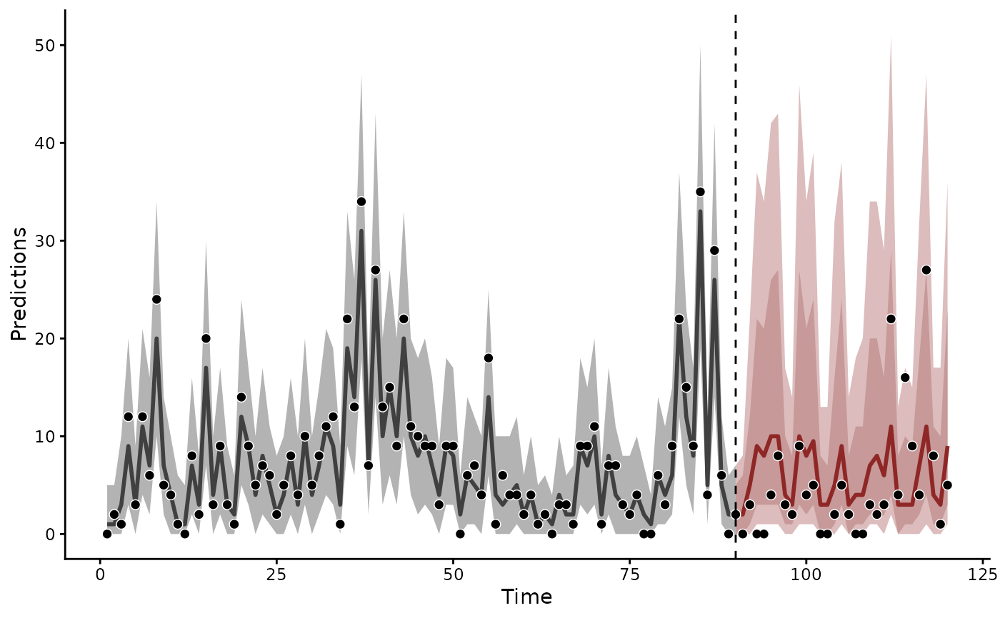
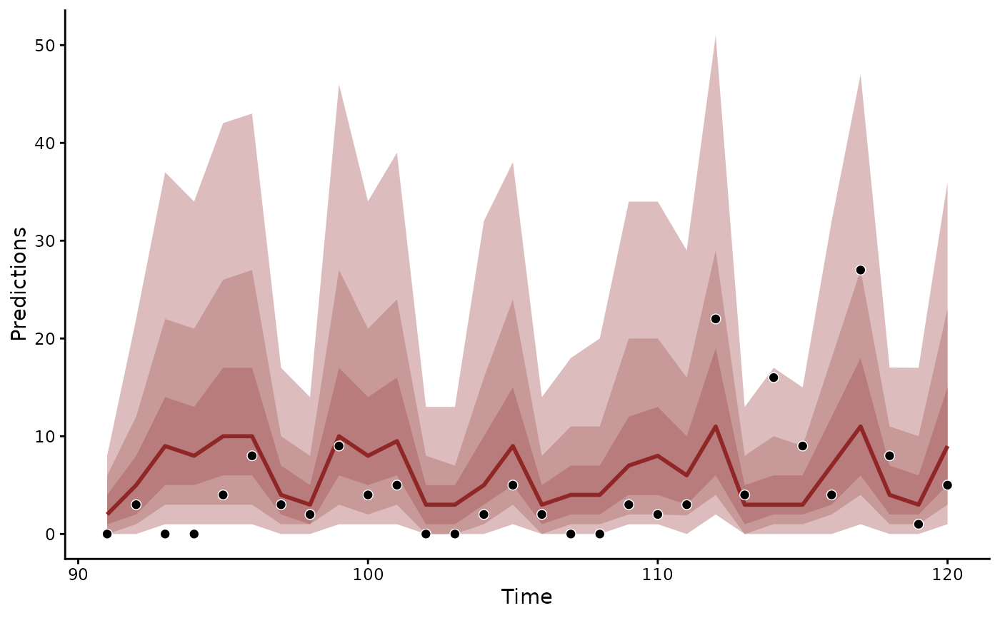

Plot method for mvgam_forecast objects returned by
hindcast.mvgam() and forecast.mvgam(). Draws one panel per
series (faceted by default) with nested quantile ribbons for the
forecast, a single grey ribbon for the hindcast, posterior median
lines and the observations as points. A dashed vertical line marks
the boundary between training and forecast times when both are
drawn.
Arguments
- x
An
mvgam_forecastobject.- series
Optional integer vector, character vector of series names, or
"all". WhenNULL(the default), every series is plotted and the panels are faceted viaggplot2::facet_wrap().- probs
Numeric vector of credible interval widths for the forecast ribbon. Defaults to
c(0.5, 0.8, 0.95)which draws three nested bands from the outer 95% to the inner 50%. Hindcast ribbons always use the widest entry.- hindcast, forecast
Logical. Whether the hindcast and the forecast are drawn. Both default to
TRUE. Setting one toFALSEdraws the other alone.- newdata_obs
Logical. When
TRUE(the default) and the object carriestest_observations, the test observations are overlaid on the forecast region.- ...
Unused. Anything passed here is refused.
Details
The forecast takes the shades of the red bayesplot scheme. The hindcast band is light grey, which separates in-sample uncertainty from the nested forecast bands.
forecast.mvgam() and hindcast.mvgam() return the objects this
method draws. Predictions that leave out the fitted trend state
come from posterior_predict.mvgam() and
posterior_epred.mvgam().
Examples
# \dontrun{
set.seed(1)
simdat <- sim_mvgam(family = poisson(), n_series = 1L,
n_timepoints = 120L, trend_model = AR())
# Two models of one count series: a smooth of x with and without
# an AR(1) trend. The trend model samples with smaller steps
# (adapt_delta = 0.95). That avoids divergent transitions when
# lfo_cv() refits it to shorter stretches of the series
mod_gam <- mvgam(y ~ s(x, k = 5), data = simdat$data_train,
family = poisson(), chains = 2, silent = 2)
#> Warning: 209 of 2000 (10.0%) transitions ended with a divergence.
#> See https://mc-stan.org/misc/warnings for details.
mod_ar <- mvgam(y ~ s(x, k = 5), trend_formula = ~ AR(p = 1),
data = simdat$data_train, family = poisson(),
chains = 2, silent = 2,
control = list(adapt_delta = 0.95))
#> Warning: 3 of 2000 (0.0%) transitions ended with a divergence.
#> See https://mc-stan.org/misc/warnings for details.
# }
# \dontrun{
fc <- forecast(mod_ar, newdata = simdat$data_test)
# The grey hindcast band covers the training times. The red bands
# are the 80% and 95% forecast intervals, with the held-out counts
# as points
plot(fc, probs = c(0.8, 0.95))

# The forecast alone
plot(fc, hindcast = FALSE)

# }